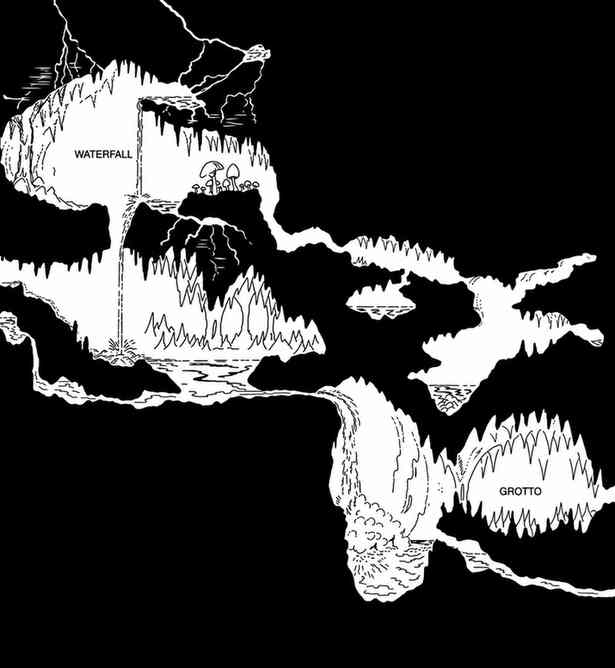

火山 · Volcanoes
火山是地下火灾、有毒气体排放以及其他问题的主要原因。火山爆发常与地震同时发生；一次地下喷发可能让有人居住的走廊充满熔岩或蒸汽，也可能堵死逃生通道或常用的交通路线。

上一节：有毒气体 · Poisonous Gases
下一节：地下行动规则 · Movement Rules for Underground Play
火山是地下火灾、有毒气体排放以及其他问题的主要原因。火山爆发常与地震同时发生；一次地下喷发可能让有人居住的走廊充满熔岩或蒸汽，也可能堵死逃生通道或常用的交通路线。

上一节：有毒气体 · Poisonous Gases
下一节：地下行动规则 · Movement Rules for Underground Play